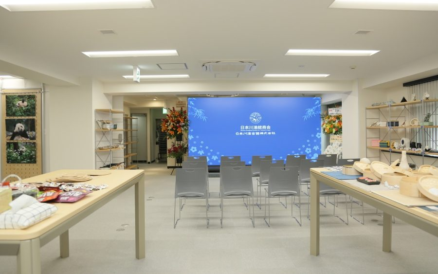
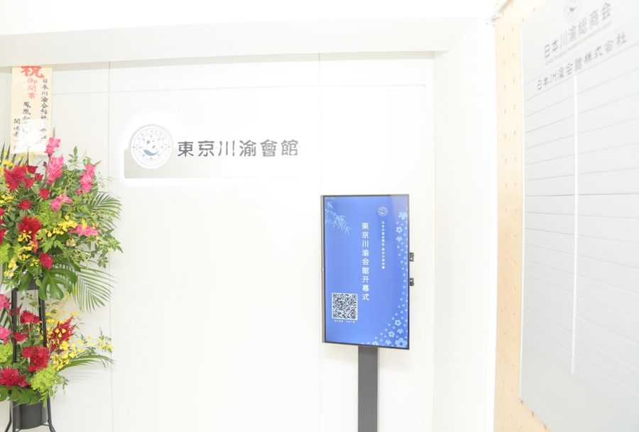
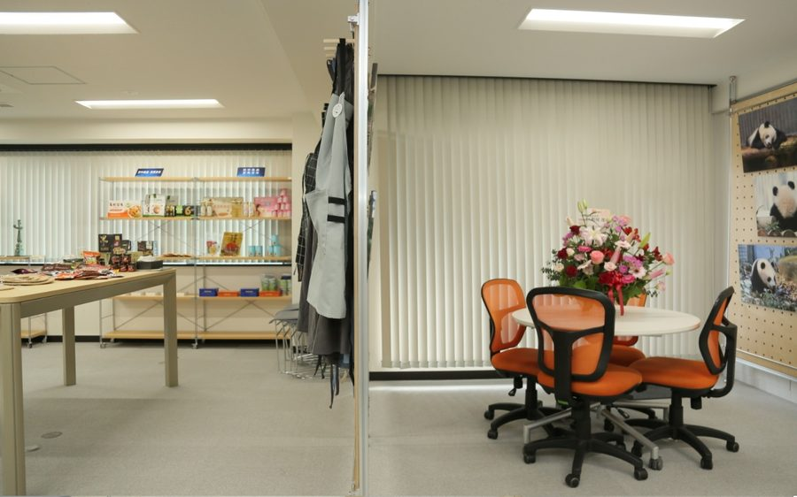
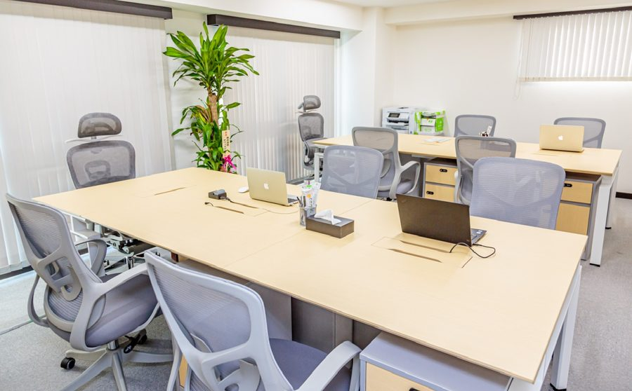

中日经验共享资源对接平台経験共有・リソースマッチング・プロジェクトインキュベーション
日本川渝会館は、「プラットフォーム＋プロジェクト」のモデルにより、日中間のビジネス連携と事業創出を支援する拠点です。 日本川渝会馆株式会社是日本川渝总商会发起成立，专门为推动川渝与日本间文化交流和经贸合作而成立的实体平台。
日本川渝会馆株式会社是日本川渝总商会发起成立，专门为推动川渝与日本间文化交流和经贸合作而成立的「日川渝会馆」实体平台。采用「平台+项目」模式，打造中日的经验共享、资源对接、项目孵化平台。
日本川渝会馆构建平台支撑服务，如行政服务、法务税务、产品展示、产品调研、公司注册、产品检验、产品本地化改造等，建设展厅，精准对接渠道，定期举办推介会，让川渝优质文旅、美食、产品持续曝光并获取商机。
日本川渝会馆为孵化重点项目，提供精准订单需求、金融供应链等支持，并通过股权投资、品牌联营、经销合作等方式孵化项目。
日本川渝会館は、「プラットフォーム＋プロジェクト」のモデルにより、日中間のビジネス連携と事業創出を支援する拠点です。
行政手続き、法務・税務、会社設立、製品展示・市場調査、製品検査、日本市場向けローカライズなど、日本進出に必要な支援をワンストップで提供します。
また、展示スペースを活用した製品・事業の発信、日本の流通チャネル・パートナーとのマッチング、プロモーション説明会を通じて、川渝地域の高品質な文化・観光・食品・製品の事業機会を創出します。
さらに、有望なプロジェクトについては、投資、ブランド共同運営、販売代理などの形で事業化・成長を支援します。
COMPANY · 公司信息COMPANY · 会社情報
Nihon Senyu Kaikan Co., Ltd.Nihon Senyu Kaikan Co., Ltd.


BUSINESS · 事业内容BUSINESS · 事業內容
作为日中桥梁，我们开展广告宣传、活动运营、观光旅游、房地产、贸易、电商等多元化业务，并通过企业及地方政府的品牌建设支持、口笔译服务、旅游推广等，全力促进日中两国的商业与文化交流。 日本と中国の架け橋として、広告・宣伝、イベント運営、観光・旅行、不動産、貿易、ＥＣなど多様な事業を展開し、企業や自治体のブランディング支援、通訳・翻訳サービス、観光プロモーションを通じて、日中両国のビジネスと文化交流を促進する総合ビジネスを支援いたします。
MEMBERS · 主要成員MEMBERS · 主要成員
法人代表者
周 密 Zhou Mi
董事取締役
李勇男 · 賀乃和 · 呂敏 · 楊泉
监事監事
徐佳鋭 · 楊瀚
发起设立発起・設立
日本川渝总商会日本川渝総商会

GALLERY · 会館写真GALLERY · 会館写真







PARTNERS · 合作伙伴PARTNERS · 提携団体
日本川渝会館は、全華聯の支援を基盤として、中日友好交流と協力に力を注ぎ、両国の経済、文化、科学技術など様々な分野における発展を促進することに努めております。 日本川渝会馆依托于全华联的支持，致力中日友好交流与合作，促进中日两国在经济、文化和科技等各个领域的发展。
日本川渝会館は、日本川渝総商会が発起・設立した、川渝と日本間の文化交流と経済貿易協力を推進するために専門的に設立された商業プラットフォームです。 日本川渝会馆是由日本川渝总商会发起成立，专门为推动川渝与日本间文化交流和经贸合作而成立的商业平台。
CONTACT · 联系我们CONTACT · お問い合わせ
日本落地、资源对接、项目孵化——欢迎随时来信。日本進出・リソースマッチング・プロジェクト孵化——お気軽にお問い合わせください。